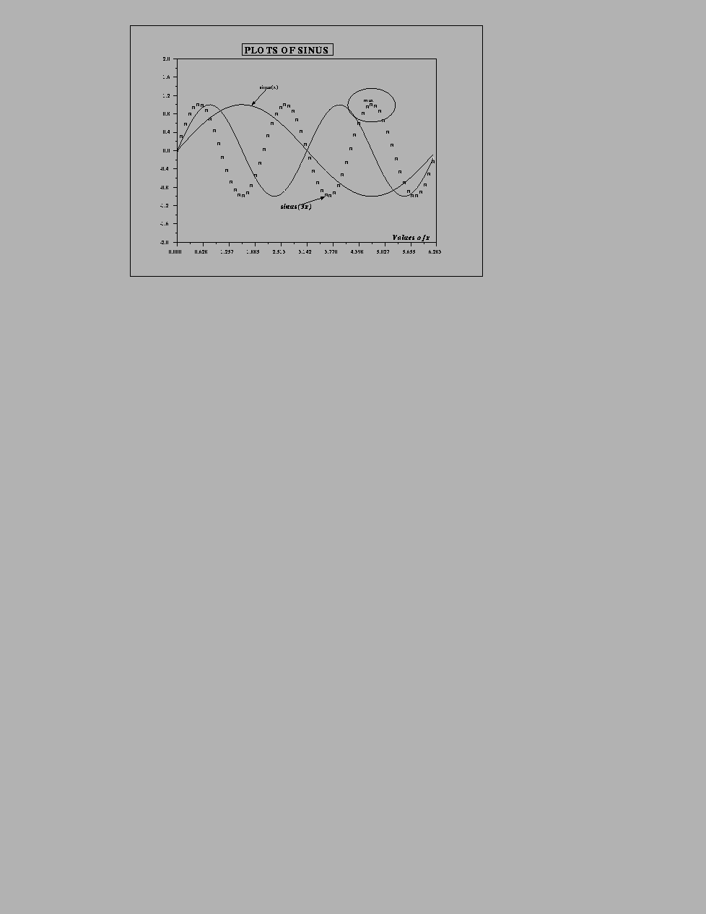

Next: 5.5 3D Plotting
Up: 5.4 2D Plotting
Previous: 5.4.6 Some Classical Graphics
edit_curv : interactive graphic curve editor.
gr_menu : simple interactive graphic editor. It
is a Xfig-like simple editor with a flexible use for a nice
presentation of graphics : the user can superpose the elements of
gr_menu and use it with the usual possibilities of xset.
locate : to get the coordinates of one or more
points selected with the mouse on a graphic window.
Figdirfigures/
Figure 5.10:
Presentation of Plots
 |
Next: 5.5 3D Plotting
Up: 5.4 2D Plotting
Previous: 5.4.6 Some Classical Graphics
Scilab Group